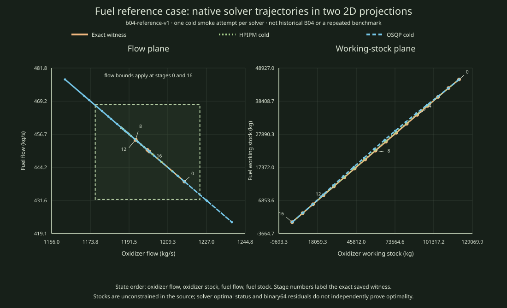

Native solver output, shown as a diagnostic illustration
Native B04 smoke trajectories as two projections of the 4D state
The left panel plots oxidizer flow against fuel flow. The right plots the two working stocks. The same 17 states from each four-dimensional trajectory appear in both panels.

Download the two saved native attempt rows · Open the exact reference witness
Evidence scope. This is one smoke capture, with one cold attempt per solver. It is an illustration of returned solver trajectories, not a repeated benchmark, canonical comparison record, independent optimality proof, or reconstruction of historical B04. The exact saved witness is separately proven globally optimal for the frozen
b04-reference-v1 input. The solver output is preserved with its raw attempt rows. State/control feasibility diagnostics use binary64 residuals and remain inconclusive.Recorded solver values
| Attempt | Original norm | Max residual | Evidence status |
|---|---|---|---|
| Exact saved witness | 160.880653945527 | 0 (rational check) | exact global optimum for this frozen reference |
| HPIPM, one cold smoke attempt | 160.880653945490 | 2.91e-11 | inconclusive |
| OSQP, one cold smoke attempt | 160.882458930638 | 1.91e-06 | inconclusive |
Reproduce
python3 scripts/reports/mpc01/b04_native_smoke_projection.pyRunner source commit: 9202df9aca690d9c83c780eb6e255c3f87473fd9. Frozen input SHA-256: bc9e1b804b7878cb0da5c28c030893e1b41e7a2a34cb86b1c0fb8380ec780f6d. Attempt rows SHA-256: 1ce79daf8a56c4dcce86dade4f6a1cb478f380c3ed4480015d84fee901ec2ed0.